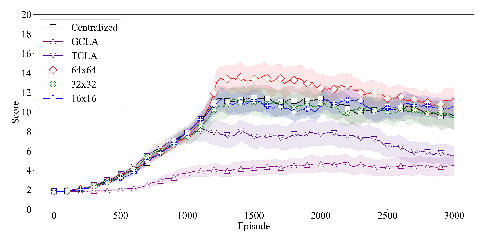

Multi-Agent Reinforcement Learning
- Date: 06/10/21
- Team: Anthony Harris, Siming Liu
- Environment: Ubuntu, SMAC, Tensorflow, Python
- Goal: Scale deep reinforcement learning algorithms for mixed cooperative and competitive multi-agent environments.
- Key Words: Deep reinforcement learning, multiagent system, influence map, StarCraft II, SMAC, MAIRL, MAIDRL
Project Instruction
1. Overview
In recent years, reinforcement learning algorithms have been used in the field of multi-agent systems to help the agents with interactions and cooperation on a variety of tasks. Controlling multiple agents simultaneously is extremely challenging as the complexity increases drastically with the number of agents in the system. In this study, we propose a novel semi-centralized deep reinforcement learning algorithm for mixed cooperative and competitive multi-agent environments. Specifically, we design a robust DenseNet-style actor-critic structured deep neural network for controlling multiple agents based on the combination of local observation and abstracted global information to compete with opponent agents. We extract common knowledge through influence maps considering both enemy and friendly agents for unit positioning and decision-making in combat.
2. Linux Environment - Ubuntu
https://ubuntu.com/download/desktop
3. SMAC Environment
https://github.com/oxwhirl/smac/blob/master/docs/smac.md
4. PySC2 - StarCraft II Learning Environment
https://github.com/deepmind/pysc2
5. TensorFlow 2
https://www.tensorflow.org/tutorials/quickstart/beginner
6. Reinforcement Learning
https://www.tensorflow.org/tutorials/reinforcement_learning/actor_critic
7. Results

Videos
Video 1: Random agents before learning
Video 2: Centralized learning result
Video 3: MAIRL learning result
Video 4: MAIDRL learning result
Video 5: Learned behavior - prioritized targeting
Video 6: Learned behavior - dodging
Open Research Questions
- Influence Map Expension, IM functions, IM new features
- Influence Map - Convolutionary Neural Networks
- MAIDRL - Multi-Agent Learning
- Asymmetric scenarios: 3s3z - Feature Engineering
- Heterogeneous Team Control
- MAIDRL - Credit Assignment
- MAIDRL - Recurrent Neural Networks
- More...
References
- Harris, A.; Liu, S. "MAIDRL: Semi-centralized Multi-Agent Influence Dense Reinforcement Learning", 2021 IEEE 3rd Conference on Games. Copenhagen, Denmark. Aug 17-20, 2021 (IEEE CoG 2021) (Link to be updated)